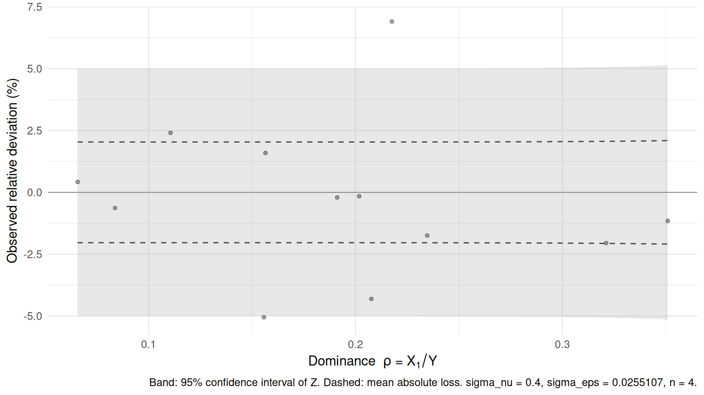

tab <- tables$region
head(tab)
#> region n_ent ca ca_x1 ca_x2 ck
#> 1 R01 1819 5551319 465106 130291 0.2235
#> 2 R02 1370 4522436 297176 145676 0.7124
#> 3 R03 842 3608407 399105 221902 0.8598
#> 4 R04 581 2334598 471136 436108 0.9016
#> 5 R05 427 1345988 209603 81971 0.9810
#> 6 R06 293 1145184 179236 63592 0.74672 Perturber un tableau
2.1 Ce que le package attend
dominoise travaille sur un tableau déjà agrégé, accompagné de clés de cellule déjà agrégées elles aussi. Quatre colonnes suffisent.
| Colonne | Obligatoire | Contenu |
|---|---|---|
total |
oui | l’agrégat \(Y\), strictement positif |
x1 |
oui | la plus grosse contribution individuelle, même unité que le total |
x2 |
non | la deuxième contribution — ouvre l’évaluation du scénario II |
ck_var |
oui | la clé de cellule, dans \([0;1]\) |
Notre tableau de démonstration coche ces cases : le chiffre d’affaires régional, sa plus grosse et sa deuxième contribution, et la clé.
Si la colonne de clés contient la somme brute des clés individuelles plutôt que sa partie fractionnaire, il suffit de le signaler avec reduce_key = TRUE ; le package s’en charge. Sinon, une clé hors de \([0;1]\) déclenche une erreur, plutôt qu’un bruit silencieusement aberrant.
2.2 Appliquer le bruit
res <- pm_perturb(
tab,
total = "ca",
x1 = "ca_x1",
x2 = "ca_x2",
ck_var = "ck",
params = params,
indicator = "chiffre_affaires"
)
head(res)
#> region n_ent ca ca_x1 ca_x2 ck rho rho2 ck_nu ck_eps
#> 1 R01 1819 5551319 465106 130291 0.2235 0.08378 0.02347 0.4400 0.40238
#> 2 R02 1370 4522436 297176 145676 0.7124 0.06571 0.03221 0.1496 0.56578
#> 3 R03 842 3608407 399105 221902 0.8598 0.11060 0.06150 0.2030 0.82765
#> 4 R04 581 2334598 471136 436108 0.9016 0.20181 0.18680 0.6154 0.47234
#> 5 R05 427 1345988 209603 81971 0.9810 0.15572 0.06090 0.6926 0.02363
#> 6 R06 293 1145184 179236 63592 0.7467 0.15651 0.05553 0.1149 0.73769
#> ca_pert
#> 1 5516296
#> 2 4541511
#> 3 3695209
#> 4 2330919
#> 5 1278027
#> 6 1163442Le tableau initial est renvoyé intact, augmenté de cinq colonnes : la dominance rho, la part du deuxième contributeur rho2, les deux clés dérivées ck_nu et ck_eps, et le total perturbé ca_pert.
L’argument indicator mérite une mention particulière. Il entre dans la chaîne hachée qui produit les tirages : deux indicateurs différents calculés sur les mêmes cellules reçoivent ainsi des bruits indépendants. C’est aussi lui qui garantit la reproductibilité — relancer la même commande redonne exactement les mêmes valeurs. Par défaut il vaut le nom de la colonne de total, mais mieux vaut le fixer explicitement : c’est une convention de nommage à gouverner dans la durée (chapitre 3).
res2 <- pm_perturb(tab, "ca", "ca_x1", "ck", params,
indicator = "chiffre_affaires")
identical(res$ca_pert, res2$ca_pert)
#> [1] TRUE2.3 Ce que le bruit a coûté
Le mécanisme étant analytique, on connaissait avant même de toucher aux données la perte moyenne à attendre. assess_utility_empirical() confronte les deux.
assess_utility_empirical(res)
#> n_cells mean_abs_dev median_abs_dev q90_abs_dev max_abs_dev rmse_rel
#> 1 12 2.219 1.671 4.975 6.906 3.018
#> theo_mean_abs pct_above_5 pct_above_10 pct_above_20
#> 1 2.043 16.67 0 0La colonne theo_mean_abs donne l’espérance théorique de la perte absolue, évaluée à la dominance propre de chaque cellule puis moyennée sur le tableau ; mean_abs_dev donne l’écart effectivement subi. Les deux doivent être proches : c’est la vérification de cohérence la plus simple à présenter à un comité du secret. Les colonnes pct_above_* indiquent la part des cellules dont l’écart relatif dépasse 5, 10 et 20 %.
Une ventilation est possible avec by, par exemple par strate de publication.
2.4 Ce que le bruit a protégé
assess_risk_empirical(res, scenario = "I")
#> scenario beta n_cells observed_pct theo_mean theo_max
#> 1 I 0.2 12 0 2.346e-109 2.816e-108observed_pct mesure la proportion de cellules pour lesquelles l’attaque du scénario I aurait effectivement réussi sur ce tirage-ci : celles où \(|Y' - X_1| / X_1 < \beta\). theo_mean est la probabilité théorique moyenne, et theo_max son maximum sur le tableau. Le taux observé est une réalisation de la probabilité garantie : les deux doivent se recouper.
Le scénario II se mesure de la même façon, à condition d’avoir déclaré x2.
assess_risk_empirical(res, scenario = "II")
#> scenario beta n_cells observed_pct theo_mean theo_max
#> 1 II 0.1 12 0 1.176e-93 1.412e-92La différenciation, elle, ne s’évalue pas cellule par cellule : elle porte sur des couples de cellules. Elle est contrôlée a priori par la borne du scénario DIFF, fixée au moment du calibrage (chapitre 5).
2.5 Visualiser l’impact
pm_plot_impact() place chaque cellule selon sa dominance et l’écart relatif qu’elle a subi, et superpose l’enveloppe théorique : la bande de confiance à 95 % et l’espérance de la perte absolue.
pm_plot_impact(res)
Deux lectures s’en dégagent. Le nuage remplit la bande sans en déborder systématiquement, ce qui confirme l’accord entre théorie et réalisation. Et la bande s’élargit avec \(\rho\) : les cellules dominées, les plus sensibles, sont les plus fortement perturbées, tandis que les cellules bien réparties ne subissent que le bruit de fond \(\sigma_\varepsilon\). C’est exactement l’intention du mécanisme.
2.6 Les cellules que le mécanisme ne protège pas
Le bruit étant multiplicatif, il est sans effet sur les totaux nuls et quasi nuls : perturber 0 laisse 0. pm_perturb() laisse ces cellules inchangées et le signale par un avertissement. Elles appellent un traitement séparé — suppression ou méthode additive — qui sort du cadre de ce package.
De même, une contribution x1 supérieure au total produit une dominance \(\rho > 1\) : ce n’est pas une configuration prévue par le mécanisme, et un avertissement invite à vérifier les entrées.
2.7 Ce que la table emporte avec elle
Toute la configuration est archivée dans l’attribut pm_meta : paramètres, noms de colonnes, indicateur, réglages de hachage, version du package et date.
meta <- attr(res, "pm_meta")
meta$params$mechanism
#> $sigma_nu
#> [1] 0.4
#>
#> $sigma_eps
#> [1] 0.02551
#>
#> $n
#> [1] 4
meta[c("indicator", "operation", "key_digits", "n_cells", "n_unperturbed")]
#> $indicator
#> [1] "chiffre_affaires"
#>
#> $operation
#> [1] "sum"
#>
#> $key_digits
#> [1] 9
#>
#> $n_cells
#> [1] 12
#>
#> $n_unperturbed
#> [1] 0Cet attribut est la mémoire de la perturbation : conservez-le avec la diffusion, c’est lui qui permettra de rejouer ou de justifier le traitement des années plus tard. Attention toutefois, la plupart des verbes dplyr suppriment les attributs : extrayez pm_meta avant de retravailler la table.